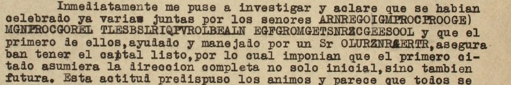

At a glanceCiphertext-only break · partial (88% of the cipher)
- The letter
- A typed letter of three pages on Bayer letterhead, New York, 29 August 1921, signed P. Duhart, to “Sr Vicente Gutierrez”, 1433 Pleasant St., New Orleans, with 17 runs of capitals (325 letters) set into clear Spanish.
- Where
- CEHM-Carso, Mexico City, Fondo DCXXI (Archivo de Félix Díaz), DCXXI.3.231.1, three images. No DECODE record is cited in the notes. Part of catalogue entry 1445, whose other letters use other systems and are not read here.
- The cipher
- Five letter pairs swapped both ways (A-G, E-R, I-S, L-O, P-U); every other letter stands for itself. Word spaces are dropped inside a name and kept in two runs.
- How it was read
- The key was read off one run, an English sentence the letter quotes, by probable words, then frozen. Applied to the other 16 runs it gives 11 of them exactly and 252 of 260 letters (96.9%); the misses are typing slips. The expected forms were written after the decryption, so this is a consistency test, not a prediction.
- What it says
- Duhart reports on juntas in New York of the exiles (Cuéllar, Calero, Esquivel Obregón, Martínez Carrillo and others) and on a financier who would “not put a damn nickel” into the matter if “this man” had a part in it.
- Still open
- Seven words carry a typist’s slip (a wrong letter or a missing one), so they are not counted as read; 50 of 57 is under the 95% bar. The people named are the contributor’s identifications; the letter does not name Díaz.
- Credit
- Transcription and solution by WAINUT (a Dutch AI company) with AI language-model agents, from the CEHM images; no human palaeographer checked the text. The project re-ran the scripts and compared about 290 of the 325 letters with the images.
01 The letter
The letter is typed on Bayer letterhead, dated New York, 29 August 1921, with a received stamp “SEP 2 REC’D”, and signed P. Duhart. It is addressed to “Sr Vicente Gutierrez” in New Orleans. The contributor takes this to be a cover name of Félix Díaz, from the greetings to “Isabelita” and the subject; the letter does not name Díaz. The archive’s record says that twenty-one “claves no descifradas” of felicista persons exist in the fondo. In 17 places the typist puts a run of capitals into the clear Spanish text instead of a name or phrase; the letter is about meetings held in New York over who was to direct a venture and supply its capital.

02 The key
The cipher swaps letters in pairs: A and G, E and R, I and S, L and O, P and U, each written for the other. Sixteen other letters occur in the runs (B C D F H J K M N Q T V W X Y Z) and stand for themselves. The key has ten entries, the five pairs written both ways (key_frozen.tsv).
It was found on one run only, R12, an English sentence that Duhart says he quotes “textually” from one of the financiers: SF THSI MGN HGI GNYTHSNA TL DL WSTH THSI MGTTRE S WLN’T ERCLMMRND TL UPTG DGMN NSCKRO. Read with probable words it is If this man has anything to do with this matter I won’t recommend to put a damn nickel, and it shows each of the five pairs in both directions (S and I in this, G and A in anything, R and E in matter, L and O in to and nickel, U and P in put). The seven letters R12 does not show (B F J Q V X Z) are taken as themselves; they come out as themselves in the held-out runs (RUBIO, RAFAEL, NARANJO, ESQUIVEL, NAVARRETE, EXCLUYENDO, GARZA).
The typist slips: five times a plain letter (or a wrong one) is typed where its partner was due (R06, R08, R16, and R17 twice), and three letters are left out (R03 twice, R17 once). In R05 the letter in the place of R16’s slip is an A typed over another letter, which looks like the same slip caught in time. As the contributor reports (the project did not read the paper), this is neither of the two systems Narváez (2015) described for the same fondo (Argumedo’s numbers and the Wellington letter’s Gronsfeld-type key 313).
03 The test
The contributor froze the key (the hash of key_frozen.tsv is in FROZEN.sha256; the project checked that it matches) and decrypted the other 16 runs, comparing each with the name or phrase the clear text points to. Result: 11 of 16 runs exact, 252 of 260 letters (96.9%). The five runs that miss are the slips listed above. The expected forms were written after the decryption, from the decryption and the clear text; the contributor says so, and the order of events rests on the contributor’s record (no outside timestamp). It is a consistency test, not a prediction.
The runs also agree with each other: the two men of R01 and R05 (the general who claims the capital and the man who “manages” him) come back as R15 and R16 on page 3 with the same claim, and the clear “el Sr 1o” is the first of R01 to R04 and “los Sres 2o 3o y 4o” the other three. The project’s own statistical check of the key on the 257 letters of the names and the phrase (R12, the sentence the key was read from, left out) gives −2.861 per letter in a Spanish 4-gram model, against −7.859 on average for 200 keys with the same values shuffled (z 6.0), and −4.066 for keys annealed onto 6 shuffled copies of the text (z 11.1): verdict pass. Names are a weak test for a language model, so the agreement with the clear text weighs more.
04 The reading
All 17 runs decrypt. Each is given in its Spanish sentence in the repository file; here are the runs as read, with the marks {x/y} (the typed letter x, read y) and {+a} (a letter the typist left out):
R01 GENERAL SAMUEL CUELLAR · R02 MANUEL CALERO · R03 TORIBIO ESQU{+I}VEL OBR{+E}GON · R04 RAFAEL MARTINEZ CARRILLO · R05 LOPEZ NEGRETE · R06 GARZA ALDAP{R/E} · R07 GARCIA NARANJO · R08 GARZA ALD{N/A}PE · R09 RUBIO NAVARRETE · R10 VILLAR · R11 EXCLUYENDO ACTUAL REPRESENTANTE · R12 IF THIS MAN HAS ANYTHING TO DO WITH THIS MATTER I WON’T RECOMMEND TO PUT A DAMN NICKEL · R13 CANTU LUCIO BLANCO · R14 PABLO GONZALEZ CANDIDO AGUILAR MURGUIA · R15 GARCIA CUELLAR · R16 LOPEZ NE{A/G}RETE · R17 GA{E/R}CI{G/A} NARA{+N}JO
In English: Duhart looked into the matter at once and found that several meetings had been held by General Samuel Cuellar, Manuel Calero, Toribio Esquivel Obregón and Rafael Martínez Carrillo; the first, helped and “managed” by a Mr López Negrete, claimed (they claimed) to have the capital ready and insisted that he should take the complete direction, and the other three withdrew. Garza Aldape tried to reconcile them without result, and the first had García Naranjo brought in. The phrase of Duhart’s telegram of the 15th is “excluyendo actual representante”. A financier told him privately: “If this man has anything to do with this matter I won’t recommend to put a damn nickel.” The man in question is said to be in talks with Cantú and Lucio Blanco, who are in turn said to be in league with Pablo González, Cándido Aguilar and Murguía. On page 3 García Cuéllar and López Negrete have done nothing in more than a month, and the first and García Naranjo are preparing to leave New York. The identifications of these people (for example General Samuel García Cuéllar, and probably Esteban Cantú and Francisco Murguía) are the contributor’s, from the names as written and the 1921 exile; the letter gives first names only for Samuel, Manuel, Toribio, Rafael, Lucio, Pablo and Cándido. That the financier’s “this man” is the “actual representante” of R11 is inferred from the context, not said.
Counted by the README rule: 57 cipher words, 50 read as typed and 7 with a marked repair (ESQU{+I}VEL, OBR{+E}GON, ALDAP{R/E}, ALD{N/A}PE, NE{A/G}RETE, GA{E/R}CI{G/A}, NARA{+N}JO), no guesses and no holes: 87.7%, under the 95% bar, so the letter is read in part. The contributor’s own count takes the seven slips as read (100%). The name lists read cleanly in their sentences; the project’s sentence check scores the reading 0.686 (48 of 70 sentences clean), the unclean ones being name lists and modern unaccented Spanish.
05 What remains uncertain
- The seven slipped words: the typist’s signs are wrong or a sign is missing, so no key reads them as typed. Each name occurs correctly elsewhere in the letter. (Outside the session: the signs themselves.)
- The held-out expected forms were written after the decryption; the freezing order rests on the contributor’s record.
- Transcription: two passes by the contributor agree on all 325 letters. A blind copy by a second AI agent covered 14 of the 17 runs (R07, R10 and R11 were not in it) with no disagreement; the project compared R01 to R14 with the images (about 290 of the 325 letters, all agree) and did not compare page 3 (R15 to R17). No human palaeographer has checked the text.
- The people are the contributor’s identifications by surname and context, and so is the cover name’s link to Félix Díaz. The archive’s companion records DCXXI.3.231.1-2 and 3.231.2-2 were not worked.
- Prior work as far as searched (12 to 13 Nov 2026): the archive calls the runs “claves no descifradas”; Narváez 2015 does not discuss this letter, as the contributor reports (the project did not read it); one web search on the persons found general literature only.
Full texts
The transcription and the decryption of every document on this page, so that the reading can be used and checked. Short files are shown here; all are in the repository.
Duhart to 'Vicente Gutiérrez', New York, 29 Aug 1921: 17 cipher runs not prose
Duhart reports on the New York juntas: General Samuel (García) Cuéllar, Manuel Calero, Toribio Esquivel Obregón and Rafael Martínez Carrillo met; Cuéllar, 'managed' by López Negrete, claimed to have the capital and wanted sole direction, and the other three withdrew; Garza Aldape tried to reconcile them and García Naranjo was brought in. Duhart's telegram phrase was 'excluyendo actual representante', and a financier told him: 'If this man has anything to do with this matter I won't recommend to put a damn nickel.' The man in question is said to be in talks with Cantú and Lucio Blanco, who are said to be in league with Pablo González, Cándido Aguilar and Murguía.
Transcription
transcription_DCXXI.3.231.1.txt
# DCXXI.3.231.1, Pedro Duhart, New York, 29 Aug 1921, to Vicente Gutiérrez (identified by the contributor as a cover name of Félix Díaz), New Orleans. # CEHM-Carso images DCXXI.3.231.1.0001-0003.jpg. Reconciled from pass 1 (full page) and pass 2 (2x crops): # the two passes agree letter for letter on all 17 runs (325 letters). Notes on the image: # R05 letter 8: A typed over another capital (probably G); A is on top and is transcribed. # R07 letter 3: E typed heavier, perhaps over another letter; E is transcribed. # R09 and R16 are typed directly after the clear Spanish "y" (and); R01 is followed by a clear ")". # R13 is broken over two lines after CGNTP; R14 over two lines after UGBOLALNZGORZ. # id page signs R01 p1 ARNREGOIGMPROCPROOGE R02 p1 MGNPROCGOREL R03 p1 TLESBSLRIQPVROLBEALN R04 p1 EGFGROMGETSNRZCGEESOOL R05 p1 OLURZNRAERTR R06 p1 AGEZGGODGUE R07 p1 AGECSGNGEGNJL R08 p1 AGEZGGODNUR R09 p1 EPBSLNGVGEERTR R10 p1 VSOOGE R11 p2 RXCOPYRNDL GCTPGO ERUERIRNTGNTR R12 p2 SF THSI MGN HGI GNYTHSNA TL DL WSTH THSI MGTTRE S WLN'T ERCLMMRND TL UPTG DGMN NSCKRO R13 p2 CGNTP OPCSLBOGNCL R14 p2 UGBOLALNZGORZ CGNDSDLGAPSOGE MPEAPSG R15 p3 AGECSGCPROOGE R16 p3 OLURZNRGERTR R17 p3 AGRCSANGEGJL
Decryption
# Mechanical decryption of transcription_DCXXI.3.231.1.txt with key_frozen.tsv # id page decryption R01 p1 GENERALSAMUELCUELLAR R02 p1 MANUELCALERO R03 p1 TORIBIOESQUVELOBRGON R04 p1 RAFAELMARTINEZCARRILLO R05 p1 LOPEZNEGRETE R06 p1 GARZAALDAPR R07 p1 GARCIANARANJO R08 p1 GARZAALDNPE R09 p1 RUBIONAVARRETE R10 p1 VILLAR R11 p2 EXCLUYENDO ACTUAL REPRESENTANTE R12 p2 IF THIS MAN HAS ANYTHING TO DO WITH THIS MATTER I WON'T RECOMMEND TO PUTA DAMN NICKEL R13 p2 CANTU LUCIOBLANCO R14 p2 PABLOGONZALEZ CANDIDOAGUILAR MURGUIA R15 p3 GARCIACUELLAR R16 p3 LOPEZNEARETE R17 p3 GAECIGNARAJO
Reading
# Reading of DCXXI.3.231.1 (Pedro Duhart to "Vicente Gutiérrez", New York, 29 Aug 1921)
Status: **not prose** (17 cipher runs set into a letter in clear Spanish: 16 runs are personal names or a
three-word phrase; one run, R12, is a full English sentence). All 17 runs are deciphered: 50 of 57 cipher words
verbatim from the signs (87.7%), 7 with a marked repair, no holes. See NOTES.md.
Images: CEHM-Carso, DCXXI.3.231.1.0001-0003.jpg. Key: `key_frozen.tsv` (five reciprocal letter pairs).
Mechanical decryption: `decryption_DCXXI.3.231.1.txt`.
## Marked runs
Marks: `{x/y}` the signs give x, read y; `{+a}` letter added (left out by the encipherer). Word spaces inside a
name are ours (the encipherer ran the words of a name together); they are not departures.
```marked
R01: GENERAL SAMUEL CUELLAR.
R02: MANUEL CALERO.
R03: TORIBIO ESQU{+I}VEL OBR{+E}GON.
R04: RAFAEL MARTINEZ CARRILLO.
R05: LOPEZ NEGRETE.
R06: GARZA ALDAP{R/E}.
R07: GARCIA NARANJO.
R08: GARZA ALD{N/A}PE.
R09: RUBIO NAVARRETE.
R10: VILLAR.
R11: EXCLUYENDO ACTUAL REPRESENTANTE.
R12: IF THIS MAN HAS ANYTHING TO DO WITH THIS MATTER I WON'T RECOMMEND TO PUT A DAMN NICKEL.
R13: CANTU LUCIO BLANCO.
R14: PABLO GONZALEZ CANDIDO AGUILAR MURGUIA.
R15: GARCIA CUELLAR.
R16: LOPEZ NE{A/G}RETE.
R17: GA{E/R}CI{G/A} NARA{+N}JO.
```
The repairs are all of one kind: the encipherer typed the plain letter where its swap partner was due (R06 E for
R, R08 N for G, R16 G for A, R17 R for E and A for G), or left a letter out (R03 twice, R17 once). In R05 the
letter in the same place as R16's slip is an A typed over another letter: the typist caught that slip there.
## The runs in their sentences
The clear Spanish around each run is given from the image (accents as typed, i.e. mostly none); the run is in
square brackets.
1. p. 1: "Inmediatamente me puse a investigar y aclare que se habian celebrado ya varias juntas por los senores
[General Samuel Cuellar]) [Manuel Calero] [Toribio Esquivel Obregon] [Rafael Martinez Carrillo] y que el
primero de ellos, ayudado y manejado por un Sr [Lopez Negrete], aseguraban tener el capital listo, por lo cual
imponian que el primero citado asumiera la direccion completa no solo inicial, sino tambien futura. [...]
trayendo como consecuencia la separacion de los Sres 2o 3o y 4o."
2. p. 1: "En este estado las cosas, llego nuestro buen amigo [Garza Aldape] quien con su buena disposicion de
siempre, hizo cuanto pudo por conciliar los animos, sin resultado. El Sr 1o mando traer por su cuenta a
[Garcia Naranjo] y volvieron a iniciarse juntas a las cuales no concurri [...]"
3. p. 1: "Pero como en las conversaciones tenidas con nuestro buen amigo [Garza Aldape] y [Rubio Navarrete] que
se esperaba en lo absoluto contar con la cooperacion de Ud [...]"
4. p. 1: "[...] y con tal objeto pedi a [Villar] el numero del telefono, quien me dio el siguiente: "Uptown 1268"
como telefono del domicilio de Ud [...]"
5. p. 2: "Por lo que se refiere a la frase de mi telegrama: "[Excluyendo actual representante]", me permiti
llamar a Ud la atencion sobre ello de la manera mas franca y precisa, porque veo la absoluta oposicion que hace
tiempo existe a ese respecto en general entre todos los buenos amigos de Ud."
6. p. 2: "Ademas, una de las personas con quien trato la parte financiera me ha dicho en lo privado, pero de una
manera terminante textualmente: [If this man has anything to do with this matter I won't recommend to put a
damn nickel]"
7. p. 2: "He llegado tambien a aclarar que los amigos mencionados no lo han llamado ni intentan llamarlo a junta
alguna, tanto mas cuanto que se sabe de una manera positiva que esta en conferencias con [Cantu] [Lucio
Blanco] que parecen estar entendidos a su vez con [Pablo Gonzalez] [Candido Aguilar] [Murguia] etc, a cuyas
conferencias nadie cree que Ud lo haya autorizado [...]"
8. p. 3: "Despues de seguir [Garcia Cuellar] y [Lopez Negrete] afirmando que tenian el capital listo, pero sin
hacer nada positivo y practico en mas de un mes, parece que todos se han convencido que el citado arreglo
fracaso y tanto el primero como [Garcia Naranjo] se disponen ya a abandonar New York y regresar a sus
domicilios."
The clear text and the runs fit each other at every point: R01 and R05 (the general and the man who "manages" him,
both said to have the capital ready) come back together as R15 and R16 on p. 3 with the same claim; "el Sr 1o" is
the first of the four in R01-R04; R12 is in English because Duhart quotes "textually" one of the persons he deals with on the financial side
(an English speaker, by the language of the quotation).Translation
# Translation of DCXXI.3.231.1 (cipher runs in their sentences) English translation of the eight passages in `reading_DCXXI.3.231.1.md`. Deciphered runs are in square brackets. There are no holes in the runs. Words the encipherer garbled and we repaired are listed in the reading. 1. "I at once began to inquire and found that several meetings had already been held by Messrs [General Samuel Cuéllar], [Manuel Calero], [Toribio Esquivel Obregón] and [Rafael Martínez Carrillo], and that the first of them, helped and managed by a Mr [López Negrete], claimed to have the capital ready, for which reason they insisted that the first named should take complete direction, not only at the start but also later. [...] with the result that Messrs 2nd, 3rd and 4th withdrew." 2. "Things being so, our good friend [Garza Aldape] arrived, who with his usual good will did all he could to reconcile them, without result. Mr 1st had [García Naranjo] brought at his own expense, and the meetings began again; I did not attend them [...]" 3. "But since in the conversations held with our good friend [Garza Aldape] and [Rubio Navarrete] it was fully expected to count on your cooperation [...]" 4. "[...] and for that purpose I asked [Villar] for the telephone number, and he gave me this one: 'Uptown 1268' as the telephone of your home [...]" 5. "As to the phrase in my telegram, '[excluding the present representative]', I took the liberty of calling your attention to it in the most frank and precise way, because I see the absolute opposition that has existed on this point for some time, in general, among all your good friends." 6. "Moreover, one of the persons with whom I deal on the financial side has told me in private, but in the most definite way, word for word: [If this man has anything to do with this matter I won't recommend to put a damn nickel]." 7. "I have also found out that the friends mentioned have not called him, nor mean to call him, to any meeting, all the more since it is known for certain that he is in talks with [Cantú] [Lucio Blanco], who seem in their turn to have an understanding with [Pablo González], [Cándido Aguilar], [Murguía] etc., talks that nobody believes you have authorised [...]" 8. "After [García Cuéllar] and [López Negrete] kept on claiming they had the capital ready, but without doing anything positive and practical in more than a month, it seems that everyone is now convinced that the arrangement has failed, and both the first and [García Naranjo] are now getting ready to leave New York and go home."
Key: key.tsv, key_frozen.tsv
06 Sources
- CEHM-Carso (Centro de Estudios de Historia de México, Fundación Carlos Slim), Fondo DCXXI: DCXXI.3.231.1 (archivo no. 90934), images 0001 to 0003, direct JPG from the CEHM viewer over plain http (the https host fails TLS), fetched 13 November 2026; the viewer refused nothing. Record: cehm.org.mx.
- R. Narváez, “Sobre algunos criptosistemas mexicanos de principios del siglo XX”, Documenta & Instrumenta 13 (2015), pp. 107-132: two other cipher systems of the same fondo, not this one.
- Transcription, key, reading and scripts by WAINUT (pull request #511), in
targets/duhart1921.
The key, the transcription, the reading and the checks are in targets/duhart1921. A letter of the same catalogue entry in a different cipher (F. Sánchez, 1922, Narváez’s key 313) has its own page.
Cite this page
WAINUT and Daniel Bourdeau, “Pedro Duhart to “Vicente Gutierrez”, New York, 29 August 1921”, Cyphersolver, posted 13 November 2026, https://cyphersolver.com/duhart1921.html.